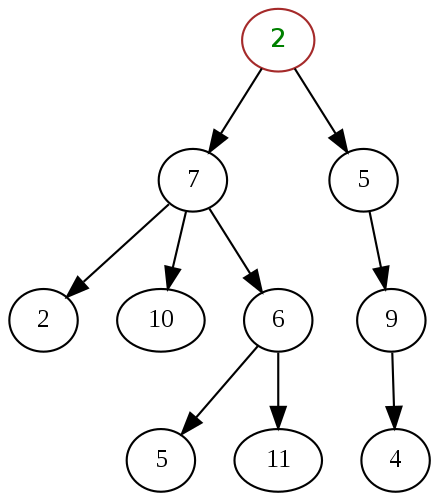

Tree¶
A tree is a widely used abstract data type that simulate a hierarchical tree structure, with a root value and subtrees of children with a paarent node, represented as a set of linked nodes. Some nodes are:

node: a structure wich may contain a value or condition, or represent a separate data structure.child node: each node in a tree has zero or more child node, which are below it in the tree.parent node: a node has a child is called the child's parent node(orsuperior).acestor node: a node's parent's parent, a node has at most one parent but possibly many ancestor nodes.sibling nodes: child nodes with the same paarent are sibling nodes.root node: the tomost node in a tree.branch nodes: any node of a tree that has child nodes.leaf nodes: any node that does not have child nodes.heightof a node: the length of the longest downward path to a leaf from that node.depthof a node: the length of the path to root.
The general solutions for tree often involves with recursion, a function which calls itself. We can use the following steps to define the recursive function:
- Consider the return value;
- Consider the parameter list;
- Consider the terminal condition;
- Consider the level logic.
Binary Tree¶
Binary Tree is a kind of tree that each node has at most two children, which are refered to as the left child and right child.

Traversal¶
There are mainly two methods to traversal a binary tree:
- Depth First Search(BFS), and according to the order we visited the parent node, BFS can be divided into:
pre-order traversal: first visiting parent node, and then left and right child;in-order traversal: first visiting left child, and then parent node, and then right child;post-order traversal: first visiting left and right child, and then parent node.
- Bread First Search(BFS), which visits the tree layer by layer.
The general code for DFS is:
1 2 3 4 5 6 7 8 9 | |
And for BFS:
1 2 3 4 5 6 7 8 9 10 11 12 13 14 15 16 17 | |
There are other types of traversal, but all can be solved with above methods.
Priorities¶
Sometimes we want to get the priority of a tree, like:
- Symmetric/Same
- Maximum/Minimum depth
- Balance
- Number of nodes
- Sum of the path from root to leaf node
- Common ancestor
Problems:
- Symmetric Tree
- Maximum Depth of Binary Tree
- Minimum Depth of Binary Tree
- Count Complete Tree Nodes
- Balanced Binary Tree
- Binary Tree Paths
- Lowest Common Ancestor of a Binary Tree
Modify and Construct¶
- Invert Binary Tree
- Constract Binary Tree from Inorder and Postorder Traversal
- Serialize and Deserialize Binary Tree
Binary Search Tree¶
Binary Search Tree(BST) is a binary tree has the priority:
Each branch node stores a key greater than all the keys in left subtree and less than those in its right substree.
The order of nodes in a BST means that each comparison skips about half of the remaining tree, so the whole lookup takes \(log(N)\) time.
For BST problems, you can convert a BST to a sorted array by inorder traversal. Or, you can also use an extral pointer pointing to node visited last time in inorder traversal to get the left node in an sorted array.